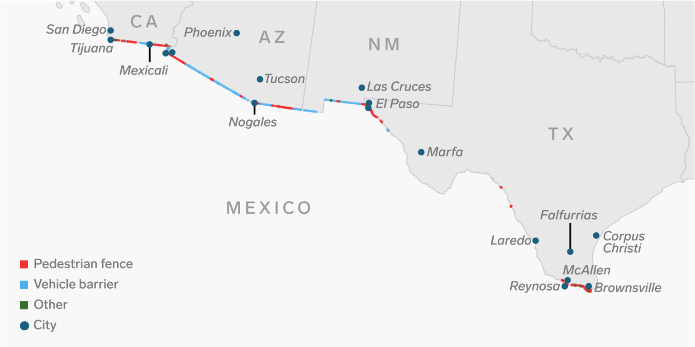

Rising death along the U.S/Mexico border
AJO, Ariz. - "A wilderness, in contrast with those areas where man and his works
dominate the landscape, is hereby recognized as an area where the earth and it's comunity of life are untrammeled
by man, where man himself is a visitor and who does not remain"
The United States / Mexico border has become a political hotspot of controversy with the Trump Administration's
tightening of border security and the oppositions fight to help migrants crossing the border. The border and the
land that encompasses it is an unwelcoming place fro migrants. Harsh terrain, extreme temperatures, and vicious
border patrol agents operating on zero-tolerance policy make crossing a perilous feat that leaves many dead in their efforts.

Map of U.S. - Mexico border. Curtesy of Business Insider
Rather than recognizing that U.S. demand was drawing migrants and crafting proper immigration and labor policy
that would take this into account. Instead, the U.S. government launched a policy of "prevention by deterrence",
which aimed to make migration so difficult and dangerous that migrants would give up or face the consequences.
Each point on the map below represents a
migrant death in Arizona. Since 1981, more than 3000 deaths have been reported and mapped by the nonprofit
Humane Borders and the Pima County Office of the Medical Examiner.
Click on the numbers to zoom in to find more points
Click on the points to examine attributs about each migrant
Cabeza Prieta National Wildlife Refuge, Ariz. - Four aid workers
arrested while attempting to leave water for migrants crossing the border
In 2018, federal prosecutors in Arizona charged four humanitarian aid workers who left water in the desert for
migrants who might otherwise suffer from exposure to the elements and thirst. In another case, the Washington Post reports that federal prosecutors dropped manslaughter charges against a border patrol agent who fired 16 times across the border, killing a Mexican boy. The aid workers face a fine and up to six months in jail.
The crimes made by these aid workers: entering the Cabeza Prieta National Wildlife Refuge without permits
to leave supplies for migrants crossing into the United States.
This is not the first time the U.S. government has come after activists, however the breadth of the
campaign against these workers, and the use of the Wilderness act which secured their charges of trespassing
was a first. In previous, people wandering around the refuge without proper documents might be sent off with a
warning. The Trump administration chose the more severe approach.
No Mas Muertos. Curtesy of itsgoingdown.org
Parker Deighan, one of the four volunteers awaiting trial on a misdemeanor charge in the United States,
told the New York Times, "the cases are on the surface is about wilderness. It is about targeting humanitarian
aid and targeting care for folks who cross the border. "
These arrests show a glimpse into a larger problem of the United States Border Patrol's attempt to curb
immigrants entering the United States. Rather than recognizing that U.S. demand was drawing migrants and crafting
proper immigration and labor policy that would take this into account. Instead the U.S. government launched a
policy of "prevention by deterrence," which aimed to make migration so difficult and dangerous that migrants
would give up.
Migrant death rising
This map shows the migrant body discovery through the years of 2001 and 2018
Curtesy of Reuters